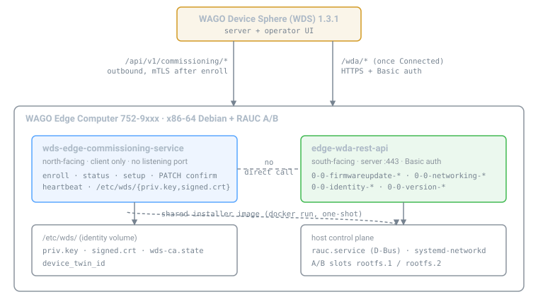

wds-edge-commissioning-service ↔ edge-wda-rest-apiThe integration contract between the two device-side services that make a WAGO Edge Computer (752-9xxx, x86-64) behave like a PFC/CC inside WAGO Device Sphere. Each section covers one concern; together they cover the whole seam.
Split by direction: one faces the server, one faces the device.
| wds-edge-commissioning-service | edge-wda-rest-api | |
|---|---|---|
| Faces | North - the WDS server | South - the device itself |
| Speaks | WAGO commissioning protocol /api/v1/commissioning/* | WDA JSON:API /wda/parameters/…, /wda/methods/…/runs |
| Direction | Outbound only, client-initiated, no listening port | Inbound only, HTTPS + Basic auth on :443 |
| Owns | Identity, RSA-4096 key + CSR, signed cert, twin id, enrollment state, heartbeat | Device state: firmware slots, network, users, system info |
| Persists | /etc/wds/{priv.key,signed.crt,wds-ca.state} | Host config: systemd-networkd, RAUC A/B slots |
| Lifetime | One-shot onboarding, then a long-lived heartbeat | Long-lived service |
| Ships from | this repo | WagoAlex/edge-computer-fw-update, MODE=server |

network_mode: host.
Once the device is Connected, Device Sphere reaches the WDA API directly -
the commissioning service is not in that path.Exactly three. Nothing else crosses the boundary.
Both sides drive the same installer image,
wagoalex/wago-fw-update-edge-computer. The coupling is that image and its mount
contract, not a REST call between the services.
| Entry point | Driven by | Path |
|---|---|---|
One-shot docker run, MODE=oneshot | commissioning service, when a setup bundle carries a [Firmware] section or Workflow=firmwareupdate | agent/fwupdate.py → container → host rauc.service over D-Bus. No REST hop. |
WDA method state machine, MODE=server | Device Sphere UI or any WDA client | POST /wda/methods/0-0-firmwareupdate-activate/runs → …-start/runs → poll 0-0-firmwareupdate-status |
# the WDA path, as the UI drives it
POST /wda/methods/0-0-firmwareupdate-activate/runs {"data":{"attributes":{"inArgs":{}}}}
POST /wda/methods/0-0-firmwareupdate-start/runs {"data":{"attributes":{"inArgs":{}}}}
GET /wda/parameters/0-0-firmwareupdate-status # 0 idle … 4 Unconfirmed
GET /wda/parameters/0-0-firmwareupdate-progress
GET /wda/parameters/0-0-firmwareupdate-errorcause
# status 4: RAUC wrote the inactive slot. reboot activates; a bad boot falls back.Both entry points end in the same place: RAUC writing the inactive A/B slot through the host service. No RAUC logic lives in the commissioning service - it decides when, the installer decides how.
Configuration/Device Sphere/Target Firmware in the UI maps to
GET /api/v1/commissioning/setup?targetFirmware=<ver>, which the commissioning
service fetches over mTLS, verifies (CMS + sha256) and applies. That is where the one-shot entry
point is invoked.Device Sphere expects the PFC/CC tree. edge-wda-rest-api serves it; the commissioning
service only gets the device into a state where the server is allowed to call it.
| Device Sphere node | WDA parameter |
|---|---|
Configuration/Device Sphere/Target Firmware | 0-0-firmwareupdate-* (see 3.1) |
Network/Bridge/EthernetPort/* | 0-0-networking-ethernetports[-N-current*] |
| Hostname, domain | 0-0-networking-hostname-*, 0-0-networking-domain-* |
| Routing, DNS | 0-0-networking-routing-*, 0-0-networking-dns-* |
| Identity, version | 0-0-identity-*, 0-0-version-* |
| edge-wda-rest-api | this repo's wda.server | |
|---|---|---|
| Port | :443 (container :8443) | :8080 |
| Auth | Basic, admin / $WDA_PASS | none |
| Surface | full tree: firmware, networking, identity, users, system, presets | networking reads only, plus one writable method |
| Adds | - | POST /wda/methods/0-0-networking-configure/runs |
The writable configure method this repo contributes is not part of
edge-wda-rest-api - requesting it there returns 404 (verified, section 07).
It runs on the commissioning container's own :8080 surface:
POST :8080/wda/methods/0-0-networking-configure/runs
{"port": 1, "ip": "192.168.2.17", "prefix": 24, "gateway": "192.168.2.1"}
# accepts the flat body above or a JSON:API envelope with "inArguments".
# writes a systemd-networkd drop-in; live `ip` apply as fallback.Note the envelope key differs: edge-wda-rest-api reads
data.attributes.inArgs; this repo's server reads
data.attributes.inArguments or a flat object.
Values presented at enrollment must equal the values the WDA API reports, or Device Sphere shows a twin that disagrees with the device's own API.
Enrollment field (deviceIdentInfos) | Source | Must match WDA parameter |
|---|---|---|
orderNumber | WDS_ORDER_NUMBER | 0-0-identity-ordernumber |
firmwareVersion | /etc/REVISIONS | 0-0-version-firmwareversion |
uii | type label / WDS_UII | 0-0-identity-serialnumber |
hostname | gethostname(2) | 0-0-networking-hostname-currentname |
macAdress (sic, one d) | SIOCGIFHWADDR | 0-0-networking-ethernetports-N-currentMacAddress |
Set both sides from the same values: WDS_ORDER_NUMBER / ORDER_NUMBER,
WDS_FIRMWARE_VERSION / FIRMWARE_VERSION.
1 discovery GET /api/v1 -> {"name":"wds"} [commissioning]
2 enroll POST /api/v1/commissioning/enroll -> 201 deviceTwinId [commissioning]
3 accept operator accepts in the Device Sphere UI [operator]
4 poll POST /api/v1/commissioning/status -> Prepared + signed cert [commissioning]
5 bundle GET /api/v1/commissioning/setup -> appload, mTLS [commissioning]
6 firmware bundle [Firmware] -> docker run installer, one-shot -> RAUC [installer]
7 confirm PATCH /api/v1/commissioning/confirm -> 200, twin Connected [commissioning]
8 heartbeat every 30s, answers delete-confirmation [commissioning]
9 managed Device Sphere reads/writes /wda/* directly [WDA API]Steps 1-5, 7, 8 are the commissioning service. Step 6 is the shared installer. Step 9 is the WDA API. Step 3 is a human. Nothing else exists in this flow.
confirm must be PATCH with Content-Type: application/json.
POST, or text/json, returns HTTP 403. This matches WAGO's own wds-device-agent.0752-9401) returns accept: Not Found; a recognized controller item
(0750-8302) succeeds. See section 08.services:
commissioning:
image: wago-edge-commissioning:latest
network_mode: host
environment:
MODE: both # onboard | wda | fwupdate | both
WDS_SERVERS: https://wdsserver:443
WDS_MODE: unsecure # TOFU the server cert
WDS_ORDER_NUMBER: "0750-8302" # see section 08
FW_UPDATE_IMAGE: wagoalex/wago-fw-update-edge-computer:bundle-latest
FW_DRY_RUN: "false"
WDA_PORT: "8080" # this repo's networking surface
volumes:
- wds-identity:/etc/wds
- /var/run/docker.sock:/var/run/docker.sock # to launch the installer
wda:
image: wagoalex/wago-fw-update-edge-computer:bundle-latest
restart: unless-stopped
environment:
MODE: server
WDA_PASSWORD: "..."
ORDER_NUMBER: "0752-9xxx"
FIRMWARE_VERSION: "04.09.01(31)"
ports: ["443:8443"]
volumes:
- /run/dbus/system_bus_socket:/run/dbus/system_bus_socket
- /etc/rauc/keyring.pem:/etc/rauc/keyring.pem:ro
- /docker/rauc-stage:/docker/rauc-stage
volumes: { wds-identity: {} }Required of the host, once: a RAUC keyring that trusts the bundle signature, and the
loop + dm-verity modules loaded. See edge-computer-fw-update.
Every setting belongs to exactly one side.
| Concern | Owner | Where |
|---|---|---|
| Server discovery, TLS mode, poll rate, timeout | commissioning | /etc/wds/wds.cfg, WDS_* env |
| Device key, CSR, signed cert, twin id, state | commissioning | /etc/wds/ volume |
| Which firmware version to install | commissioning, from the server | ?targetFirmware= |
| How firmware installs, slot choice, rollback | installer / WDA API | RAUC over host D-Bus |
| Network interface config | WDA API (reads), this repo's :8080 (writes) | systemd-networkd drop-ins |
| API auth | WDA API | WDA_PASSWORD |
| Reported identity strings | both, must agree | section 3.3 |
Run against the live lab: edge 192.168.2.17, WDS server
wdsserver. Every row below was executed, not assumed.
| Check | Result |
|---|---|
GET https://wdsserver/api/v1 | pass - {"name":"wds","assemblyVersion":"1.3.1.0"} |
GET https://192.168.2.17/wda (admin / $WDA_PASS) | pass - 200, orderNumber 0752-9xxx, firmwareVersion 04.01.00, meta.version 1.5.2-compat |
0-0-firmwareupdate-{status,progress,revertable} | pass - 200; status 0 (idle) |
0-0-identity-{ordernumber,serialnumber}, 0-0-version-firmwareversion | pass - 200 |
0-0-networking-{ethernetports,hostname-currentname,routing-currentroutes} | pass - 200; 2 EthernetPort instantiations |
Method contract: POST /wda/methods/0-0-firmwareupdate-getlastlogentries/runs | pass - 201, executionStatus: done, outArgs.Entries |
Control: POST /wda/methods/0-0-does-not-exist/runs | pass - 404, so a 201 above is real routing |
GET /wda/parameters/0-0-networking-configure on :443 | 404 by design - confirms it lives on this repo's :8080 surface, not on edge-wda-rest-api |
Repo test suite, pytest tests/ | pass - 7/7 |
Not re-run here, because it flashes a slot or needs an operator: the full
enroll → accept → confirm handshake, and
0-0-firmwareupdate-activate/-start. Both were previously taken to
Connected and to RAUC status 4 on this same hardware.
| Limit | Owner | Status |
|---|---|---|
commissioning/accept returns 404 for genuine edge items 0752-9xxx; succeeds for a known controller item 0750-8302 | WDS server (WAGO) | Workaround: WDS_ORDER_NUMBER=0750-8302. Real fix is server-side catalog registration of the edge item, mapped to a Docker-mode profile. |
No amd64 build of WAGO's wds-device-agent; the registry ships ptxdist-* arm/arm64 only | WAGO registry | This repo substitutes an x86 device_agent.py; an amd64 image equivalent was built. |
ARM .ipk in the setup bundle cannot be applied on x86 | bundle format | Skipped deliberately; the x86 agent runs in its place. |
| Firmware activation needs a reboot | operator | RAUC writes the inactive slot; reboot activates, a bad boot auto-falls-back. |
| The commissioning service's own WDA surface is networking-only and unauthenticated | this repo | Intended for host-local use; do not expose it off-device. |
WagoAlex/edge-computer-fw-update.